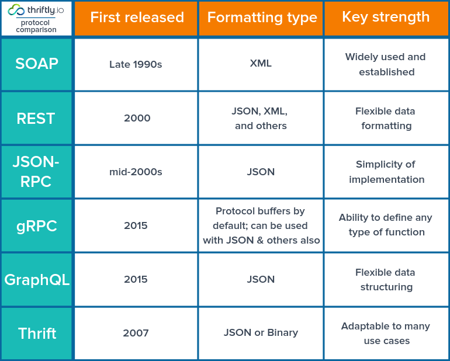
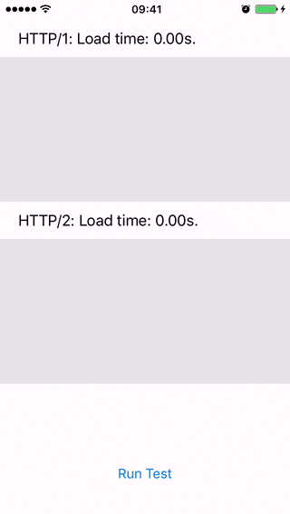

RPC
- Remote
- Procedure
- Calls

- open-source RPC framework od Googlu
- k přenosu dat využívá HTTP/2
- binární přenos dat
- streaming (bidirectional - server push)
- bezpečnost - podpora TLS (TLS 1.2 a vyšší)
- podpora 10+ programovacích jazyků (gRPC core, Protocol Buffers projects)
- Interceptors
- 1.0 => 'gRPC'
- 1.1 => 'good'
- 1.2 => 'green'
- 1.3 => 'gentle'
- 1.4 => 'gregarious'
- 1.6 => 'garcia'
- 1.7 => 'gambit'
- 1.8 => 'generous'
- 1.9 => 'glossy'
- 1.10 => 'glamorous'
- 1.11 => 'gorgeous'
- 1.12 => 'glorious'
- 1.13 => 'gloriosa'
- 1.14 => 'gladiolus'
- 1.15 => 'glider'
- 1.16 => 'gao'
- 1.17 => 'gizmo'
- 1.18 => 'goose'
- 1.19 => 'gold'
- 1.20 => 'godric'
- 1.21 => 'gandalf'
- Java (včetně podpory pro Android)
- Go
- C/C++
- C#
- Node.js
- PHP
- Ruby
- Python
- Objective-C (pro iOS)
- Dart
- Swift
- Haskell


https://grpc.io/
https://github.com/grpc/grpc